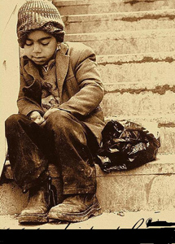

Basın Merkezi Baın Merkezi 2010/04/29: En Son Basın Açıklaması
Video, size görüşünüzü kanıtlamak için güçlü bir yol sunar. Çevrimiçi Video'ya tıkladığınızda, eklemek istediğiniz videoya
ait ekleme kodunu yapıştırabilirsiniz. Belgenize en iyi uyan videoyu çevrimiçi olarak aramak için bir anahtar sözcük de yazabilirsiniz. Word, belgenizin profesyonelce üretilmiş görünmesini sağlamak için birbirini tamamlayan üst bilgi, alt bilgi, kapak sayfası ve metin kutusu tasarımları sağlar. Örneğin,
birbiriyle uyumlu bir kapak sayfası, başlık ve kenar çubuğu ekleyebilirsiniz. Ekle'ye tıklayın ve ardından farklı galerilerden eklemek istediğiniz öğeleri seçin. Temalar ve stiller de belgenizin düzenli kalmasına yardımcı olur.Bir resmin belgenize sığma şeklini değiştirmek içinda, başlıklarınız yeni tema ile eşleşecek şekilde değiştirilir. Word'de ihtiyaç duyduğunuz yerlerde
ait ekleme kodunu yapıştırabilirsiniz. Belgenize en iyi uyan videoyu çevrimiçi olarak aramak için bir anahtar sözcük de yazabilirsiniz. Word, belgenizin profesyonelce üretilmiş görünmesini sağlamak için birbirini tamamlayan üst bilgi, alt bilgi, kapak sayfası ve metin kutusu tasarımları sağlar. Örneğin,
birbiriyle uyumlu bir kapak sayfası, başlık ve kenar çubuğu ekleyebilirsiniz. Ekle'ye tıklayın ve ar